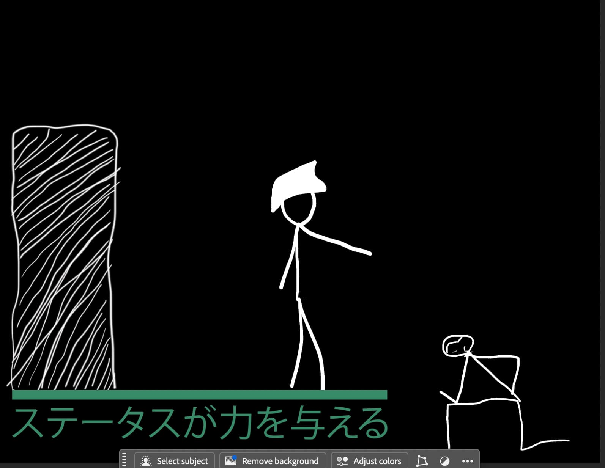

.webp)

Home About this Site Engineering & Science University Magnet SchoolThis is an experiment where we, as a class/grade, are tasked with turning a real-world problem that is happening and conveying that as a screenprint. I chose to do a local problem that would affect people who don't have a job and can't ask their parents to buy a $500 item. For my screenprint, I chose to do two prints because it would best convey my thoughts, even though it was going to take longer than other people because I was doing two.
To start the process, you would first need to figure out what the problem you are going to address. Then, after you figured that out, you wouldn't need to make a storyboard for the video later on in the project. After you get the storyboard done, you would need to make the digital representation of your project in Photoshop and Illustrator. Once you have completed that step, you are free to move on to the physical production of the project, where you will need to measure wood, cut the wood, use glue to hold it in place, and use staples to hold the glue in place until it dries; then you would take the screen, stretch it across the frames, and staple that on. The next step would be to take your digital artwork and send it to a machine that would cut your vinyl. So you would be able to weed out the artwork so the colors flow through. After you have the mesh on, then you get the vinyl, and a heat press melts the vinyl onto the mesh, and that would allow you to get paint through without it being messed up. To finish off the process, you would then do a couple of prints on paper, then on a cardboard box, so you could be ready to do one or two final prints on a piece of fabric, which would be sewn up and hung on a wall.
Then after we finished the screenprint, we were tasked with making an overview video of thinking and processing about the screenprinting. The video had to be consistent with all the steps of the process, including the storyboard and computer parts. Then after doing all of those previous steps, the class would need to add a voiceover to each of their own videos. My personal thoughts would be that the force over for the video would be the most difficult part out of the whole project. The 21st century skill that I think I represented in this project would be initiative, self-direction, and accountability, and I see this because I ended up doing two screens instead of one, and that was too much for me at the time.
 Link to page/file on your website
Link to
external page on the web (_blank opens in new tab)
Link to page/file on your website
Link to
external page on the web (_blank opens in new tab)